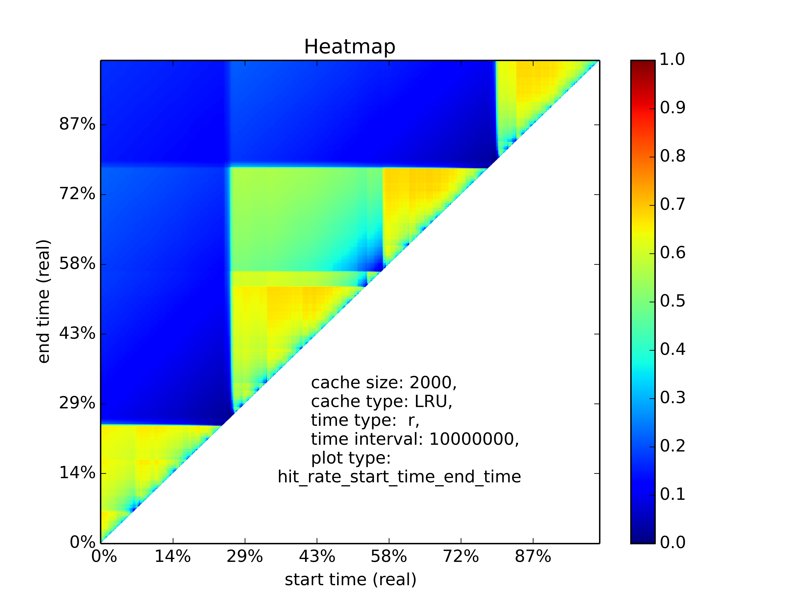
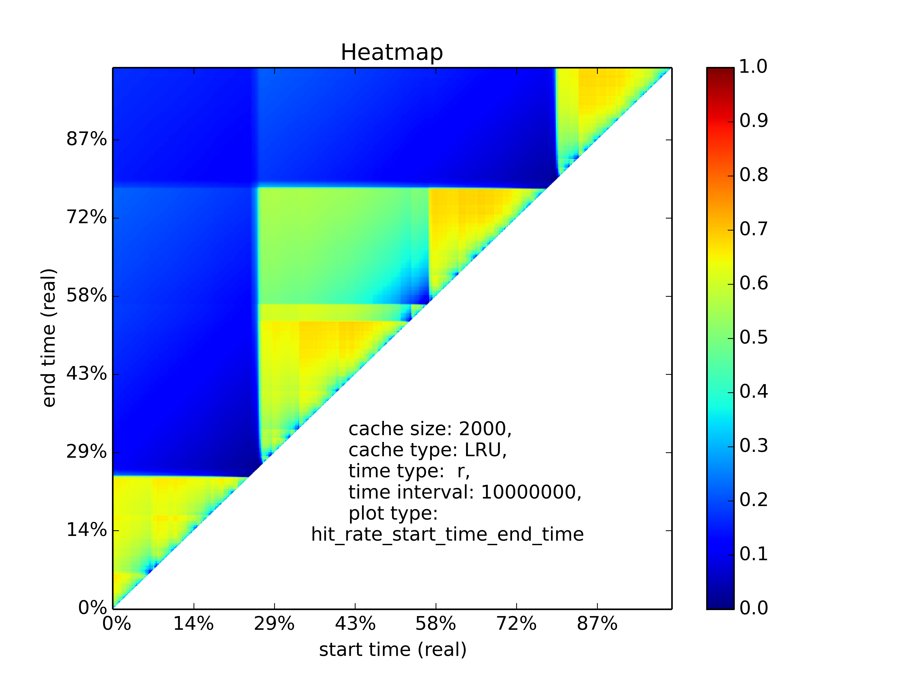

mimircache: a cache trace analysis platform¶
Release v0.0.2.69.
Welcome to the documentation of mimircache, a python3 cache trace analysis platform.
- The power of mimircache::
>>> import mimircache as m >>> c = m.cachecow() >>> c.open("trace.txt") >>> p = c.profiler('LRU') >>> p.get_reuse_dist() [-1 -1 -1 -1 -1 -1 11 7 11 8 8 8 -1 8] >>> p.plotMRC() >>> c.heatmap('r', "hit_rate_start_time_end_time", time_interval=10000000)
 

{kind=link}
An example of MRC plot and hit rate heatmap.
The User Guide¶
Supported Features¶
- Cache replacement algorithms simulation and trace visualization.
- A variety of cache replacement algorithms support, including LRU, LFU, MRU, FIFO, Clock, Random, ARC, SLRU, optimal and etc.
- Hit/miss ratio curve(HRC/MRC) plotting.
- Efficient reuse distance calculation for LRU.
- Heatmap plotting for visulizing hit/miss ratio change over time, average reuse distance over time, etc.
- Reuse distance distribution plotting.
- Cache replacement algorithm comparison.
Customization¶
Now you can customize mimircache to fit your own need, you can
- provide your own cache reader for reading your special cache trace files.
- write your own profiling method for different cache replacement algorithms.
- write a middleware for sampling your cache traces for analysis.